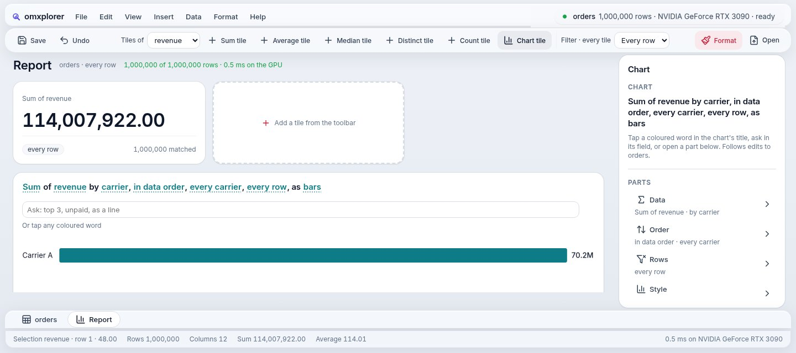
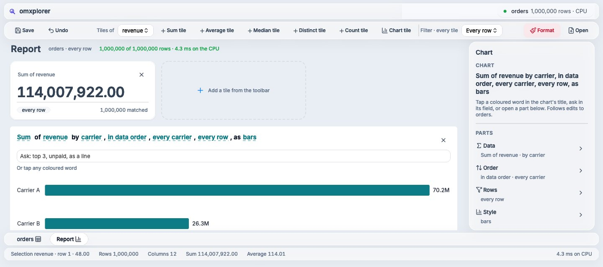

One readable language, from button to kernel.
We took one card from omxplorer and followed it all the way down: from a line of Mojo to a GTK widget, an HTML element and a Mac view. Same file. Same numbers. Three native toolkits.
# one line puts a tile on the Report kpis.append(KpiTile(kpi.view(…)))
The app says what it wants: a KPI tile holding this card. No colours, no pixels, no platform.
def KpiTile(var card: View) -> View: return card^.fill().tag("tile")
The component gives the card a role: tile. A role is a name every theme and every host agrees on.
# mojoui/theme.mojo def solid(role, radius, pad_top, pad_x, pad_bottom) -> Surface: """An opaque white card with a hairline ring and a faint shadow (the content: a table, a tile)."""
Mojo calls GTK's C functions directly, then writes the theme's numbers as GTK CSS.
w = external_call["gtk_box_new"](VERTICAL, 0) add_class(w, "mui-tag-tile")
.mui-tag-tile { background: rgb(255,255,255);
border-radius: 16px; padding: 16px 18px;
box-shadow: 0 0 0 1px rgba(15,23,42,0.07),
0 1px 3px rgba(15,23,42,0.05); }The same compiled app runs in a Python web server; the browser gets HTML, then only what changed.
<div class="vstack card"
data-tag="tile">[data-tag=tile] { background: rgb(255,255,255);
border-radius: 16px; padding: 16px 18px;
box-shadow: 0 0 0 1px rgba(15,23,42,0.07),
0 1px 3px rgba(15,23,42,0.05); }No Swift: Mojo sends Objective-C messages itself, and paints the layer from the same numbers.
msg(layer, "setBackgroundColor:", white) msg(layer, "setCornerRadius:", 16) msg(layer, "setBorderWidth:", 1) msg(layer, "setShadowRadius:", 1.5) msg(w, "setEdgeInsets:", 16, 18, 16, 18)


This is omxplorer's Report, over a million orders. Watch the first tile.
One KPI tile. Let's follow it down, from the app to the screen.
In the app it's one call. In the framework it's a card with a role: "tile".
The theme says what a tile looks like, as numbers. Not CSS: values any host can read.
Each host says the same numbers in its own toolkit's words. GTK and the web get CSS written for them; the Mac gets layer calls.
Three toolkits. One card. Real pictures from the same commit: Linux, the web, the Mac.
We don't draw a single pixel. We hand out specs.
Mojo says what's on the screen and what it looks like, as names and numbers. GTK, the browser and AppKit each draw it the way they draw best. And the same spec that tells AppKit how to draw a tile tells an agent what it can press. Agents love a good spec.
Agents: you're welcome.
A press goes in. A patch comes out.
Every omxcode app is two functions: update changes the state, view describes the whole screen. The framework works out what changed and tells each toolkit only that.
You press "Format"
a native button fires its signalupdate(event)
the app changes its state: plain Mojoview()
the whole screen, as a flat list of nodesdiff(before, after)
same shape? a few patches. new shape? a rebuildEach host applies it
An illustration of the path, step by step; the functions are the real ones (architecture.md).
Seven small ideas doing the heavy lifting.
Mojo calls C, and C calls Mojo.
external_call["gtk_button_new_with_label"](title)
No binding generator, no wrapper library. A Mojo function marked abi("C") is a plain function pointer GTK can call back.
The Mac app is Mojo talking to Objective-C.
msg(button, "setTitle:", ns_string("Go"))
Every AppKit call is a message, so Mojo sends it itself, and even makes its own classes at run time. It's cross-compiled, linked and signed on Linux.
The whole screen is one flat list.
VStack(Text("Hi"), Button("Go", on_tap=GO)) # → [VSTACK 1,2] [TEXT "Hi"] [BUTTON "Go" GO]
Flat lists compare in one pass and pair one-to-one with native widgets, so a diff is cheap and a host stays thin.
Widgets never hold your code.
comptime GO = 1
A button carries a number, not a closure. When it fires, the host looks the number up in the current screen, so nothing ever needs rewiring.
One set of numbers, three toolkits.
solid("tile", 16, 16, 18, 16)
GTK and the web get CSS written from it; the Mac gets layer calls. A lint stops a theme from styling anything that isn't a framework role, so a new app looks right with no CSS of its own.
Every button is already a tool.
Save → file-save
Search… → search {text}
Next to GTK, the web and AppKit sits a fourth host that speaks MCP. A disabled button isn't a tool, so an agent can't do anything you couldn't.
The Mac is checked against the web, to the point, on GitHub's own Macs.
Each host writes down where every tagged view landed. A script compares the Mac's list with the browser's and fails if one is more than 4 pt (or 3 %) away. No Mac on the desk needed: the app is built on Linux, run on GitHub's macOS 15 and 26 runners, and its pictures and view lists come back for the check.
One core. A thin host per platform.
Only the bottom row knows a platform exists. Everything above it is plain Mojo, tested on its own.
runs
runs
runs in CI
runs
Also in the repo: Android views through JNI (runs on the emulator) and UIKit for iPhone (builds, not run on hardware yet).
The GPU code is in the same language.
A chart's query runs as a GPU kernel written in Mojo, compiled by Modular's MAX for whatever GPU the machine has. No CUDA file, no Metal file, no second toolchain.
def add_index(data: UnsafePointer[Float32, …], n: Int32): var i = Int(global_idx.x) if i < Int(n): data.unsafe_offset(i)[] = data.unsafe_offset(i)[] + Float32(i) var ctx = DeviceContext() print("DEVICE:", ctx.name(), "·", ctx.api()) ctx.enqueue_copy(dst_buf=buf, src_ptr=host.unsafe_ptr()) ctx.enqueue_function[add_index](buf.unsafe_ptr(), Int32(N), grid_dim=N // 256, block_dim=256)
DEVICE: Apple Paravirtual device · metal RESULT: ok # 4,096 values in, each plus its index, checked
The same Mojo, compiled for Apple's Metal by MAX (--target-accelerator metal:1), on a GitHub Mac. So the Mac's GPU path can be tested on every push.
NVIDIA, on Linux
A chart grouped over a million rows on an RTX 3090, in the same process that draws the window. Next: a stream per query, and recorded kernel chains for repeat clicks.
Apple, on the Mac
A Mojo kernel runs on a Mac's GPU through MAX. Next: the data engine's queries there, checked against pyarrow, after the changes listed in our speed plan.
The browser
The web version runs the same compiled app on a server, with its GPU. In-browser WebGPU waits for a Mojo route to it: we won't add a second language to get there.
Don't take our word. Drag the line.
The same Report on two platforms, from the same commit at the same window size. Drag across to compare.


WebMacStill different, and being closed
- Text renders a touch wider and heavier on the Mac.
- The tile above is the same width everywhere; on the Mac it's 8 pt shorter.
- The inspector's line spacing is a few points off; the bottom sheet tabs aren't styled yet.
- A tile's ✕ shows on hover on the web, always on the Mac.
How it's checked
- scripts/side.py shoots each screen on GTK and the web at 1440 × 640.
- scripts/mac-ci builds the Mac app on Linux and runs the same screens on GitHub's Macs.
- scripts/parity.py compares every tagged view's rectangle, Mac against web.
- The pictures are compared too: the Mac may differ from the web by no more than 1.5 × what Linux does.
Try it. Then read the code.
A public alpha, free and open source under MIT.
Mac Apple Silicon
omxplorer as a Mac app: open a CSV, edit it like a spreadsheet, build a report.
Download for MacThe build GitHub's macOS 15 and 26 runners check on every push. It isn't notarised yet: if macOS refuses it, run xattr -dr com.apple.quarantine OmxplorerMojo.app, or open it once, then System Settings → Privacy & Security → Open Anyway. Its data work runs on the CPU for now.
Linux best today
The full app, with the GPU underneath on an NVIDIA card.
git clone https://github.com/abhisheksreesaila/omxcode cd omxcode && pixi install scripts/omxplorer.sh
For the web version: scripts/omxplorer.sh web, then open 127.0.0.1:5001.
The source MIT
Everything on this page is in the repository: the hosts, the look, the checks.
Download the sourceStart with architecture.md. Building with an agent? Point it at llms.txt.